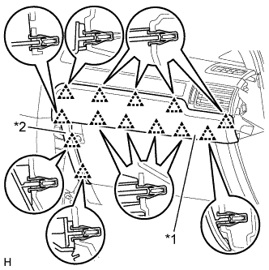
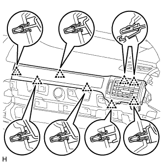
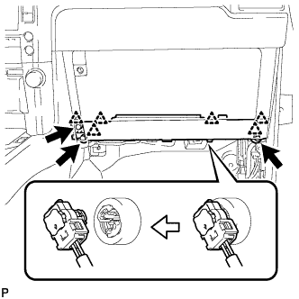

4WD CONTROL ECU > REMOVAL |
| 1. DISCONNECT CABLE FROM NEGATIVE BATTERY TERMINAL |
| Condition | Waiting Time |
| Vehicle enrolled in safety connect system | 6 minutes |
| Vehicle not enrolled in safety connect system | 1 minute |
| 2. REMOVE DOOR SCUFF PLATE ASSEMBLY RH |
| 3. REMOVE COWL SIDE TRIM BOARD RH |
| 4. REMOVE INSTRUMENT SIDE PANEL RH |
 |
Put protective tape around the instrument side panel.
| *1 | Protective Tape |
Using a moulding remover, detach the 3 clips and 2 guides and remove the instrument side panel.
| 5. REMOVE CENTER INSTRUMENT CLUSTER FINISH PANEL GARNISH |
|  |
Detach the 13 clips and remove the center instrument cluster finish panel garnish together with the instrument cluster finish panel garnish.
| *1 | Center Instrument Cluster Finish Panel Garnish |
| *2 | Instrument Cluster Finish Panel Garnish |
| 6. REMOVE NO. 2 INSTRUMENT PANEL REGISTER ASSEMBLY |
|  |
Detach the 8 clips and remove the No. 2 instrument panel register.
| 7. REMOVE LOWER INSTRUMENT COVER LH |
 |
Put protective tape around the lower instrument cover.
Using a screwdriver, detach the 4 claws and remove the lower instrument cover.
| *1 | Protective Tape |
| 8. REMOVE LOWER NO. 2 INSTRUMENT PANEL AIRBAG ASSEMBLY |
|  |
Remove the 3 bolts.
Detach the 6 claws and remove the instrument panel airbag.
Disconnect the connector.
| 9. REMOVE INSTRUMENT PANEL BOX DOOR COVER |
 |
Using a screwdriver, detach the 2 claws and 2 guides and remove the instrument panel box door cover.
| *1 | Protective Tape |
| 10. REMOVE INSTRUMENT PANEL BOX ASSEMBLY |
 |
Remove the 3 screws <B> and 2 bolts <C>.
| *1 | Screw <B> |
| *2 | Bolt <C> |
Detach the 4 clips.
Disconnect each connector, detach the clamp and remove the instrument panel box.
| 11. REMOVE FOUR WHEEL DRIVE CONTROL ECU |
 |
Disconnect the 2 connectors.
Remove the bolt and four wheel drive control ECU.